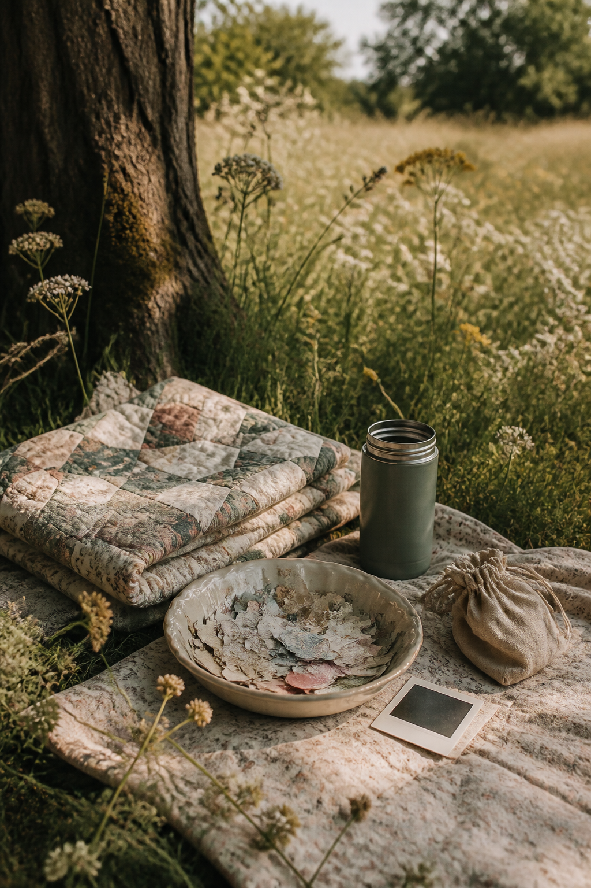
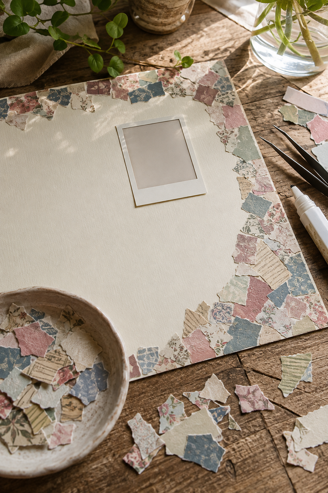

The smallest paper scraps are often the prettiest and the hardest to use. A mosaic border gives those fragments a job without asking them to become a fussy focal point. The trick is not to fill every gap. A little base paper showing between pieces keeps the page light.
This tutorial works around one photograph, but the same border can frame a title block, recipe, child’s drawing, or handwritten story.

Limit the palette before you begin
Choose four families: one dark anchor, one pale neutral, one muted supporting color, and one gentle accent. For example, dusty blue, old book paper, sage, and faded rose. Remove scraps that are much brighter than the rest; one neon fragment can make the border feel like confetti.
Tear pieces roughly 1–3 cm wide. Mix rectangles with softer irregular shapes, but keep their scale similar. Very tiny crumbs make the page look busy and are difficult to glue cleanly.
Choose only two edges
A mosaic around all four sides can trap the photograph. Start along the top and one side, forming an L shape. This creates movement and leaves two quiet edges where the eye can rest.
Place the photograph before arranging scraps, but do not glue it yet. Keep at least a hand-width of calm space between the image and the busiest part of the border.
Build a rhythm, not a pattern
Lay down a dark piece, a pale piece, and a patterned piece. Then repeat the roles, not the exact sequence. Rotate the shapes and occasionally let one overlap another by a few millimeters.
Step back after every eight or ten pieces. If one color forms a stripe, move two pieces before continuing. If everything looks equally loud, replace one patterned scrap with plain cream.

Glue from one corner outward
Take a quick phone photo of the arrangement. Lift four or five pieces at a time, add a tiny amount of glue, and rebuild from the corner outward. A glue pen or fine-tip bottle gives more control than coating the whole edge.
Press each piece with clean scrap paper rather than your fingers. This protects pale fragments from glue smears. Leave some torn edges unglued at their tips so the border keeps a little dimension.
Add the photograph and one echo
Once the border is dry, place the photograph. Give it a simple mat if it disappears into the page. Then repeat one border color near the photograph with a tiny tab, label, or thread loop. That single echo connects the center to the edge.
Resist filling the remaining blank space. Add journaling only where it supports the story. Three honest lines often balance a textured border better than another decorative cluster.
If the finished page feels crowded, cover rather than peel. Place one larger neutral scrap over the noisiest section, then add a smaller patterned piece on top. Editing the border is part of the collage process, not evidence that you did it wrong.
Keep a small bowl for scraps in the palette you are currently using. When the bowl is full, make the border before starting another collection. It is a gentle way to turn leftovers into a finished page instead of a larger storage problem.
For more scrapbook composition ideas, visit the Sentimentalica journal.